久々のスマホ機種変〜こんなに大きくなりました〜 [梅吉]
週末スマホの機種変をしてきました。今まで使っていたのはiPhone5s。
バッテリーの減りが異様に早くなり色んなアプリがすぐ落ちる。
動作もカクカクしてイラっとすることが多くなっていたのです。
買い換えろ！ってことだったのかなっ(๑˃̵ᴗ˂̵)و
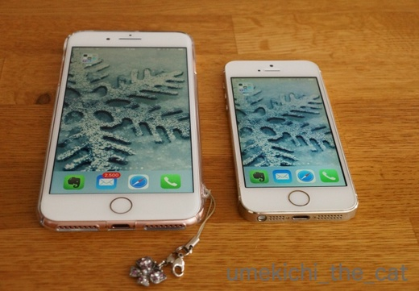
8と8Plusで迷いましたが画面が大きい8Plusにしましたよ。
（ホームボタンが無いXは操作に戸惑いそうなので見送りました。）
手が小さいのでPlusは手に余るかな、とも思ったのですが通常サイズでも
片手操作は出来ないので結局どちらでも一緒では・・・と (⌒_⌒;
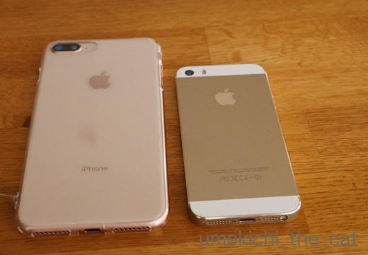
どちらもゴールドなんですがちょっと色合いが違います。
5sはシャンパンゴールド8Plusはピンクゴールドという感じ。
8Plusは透明のケースをしちゃっているので色合いがわかり難い（汗）
今回楽しみの一つが5sに比べるとカメラの性能が格段にアップしたこと。早速撮影してみます。
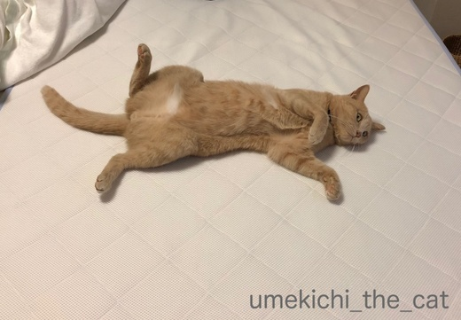
寝起きにびろ〜んと広げられちゃった梅吉さんがモデルです。
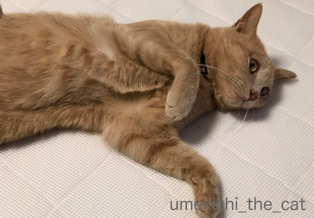
二倍ズームで寄ってみました＾＾
ズームボタンが出るのでバビッと寄れます。
ポートレートがきれいに撮れるモードもあります。
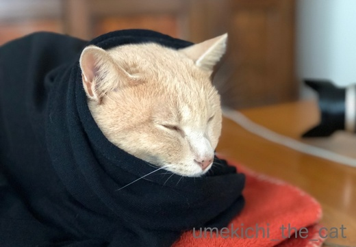
自然光モード。
スタジオ照明モード。
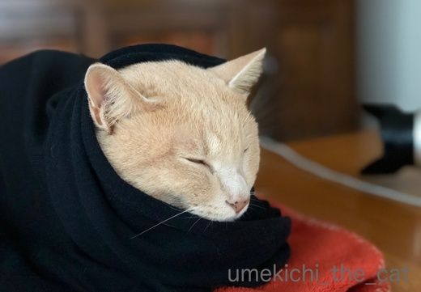
輪郭強調モード。
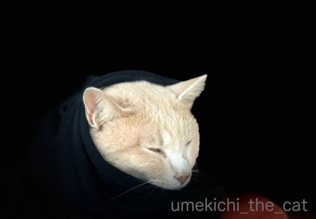
ステージ照明モード。
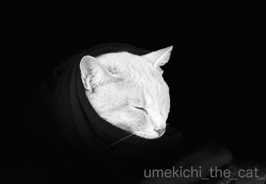
ステージ照明モード（モノクロ）。
ステージ照明以外の違いがいまひとつはっきりしないかな。
もう少し調整すると良いのかも。
ま、いろいろ遊べそうです！
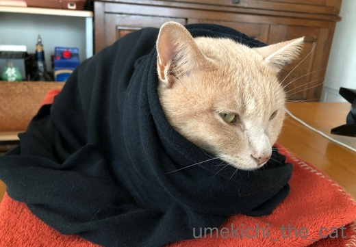
梅吉さんは私のカーディガンにくるまっていたのでした。
大阪は一気に寒くなったのですよー。
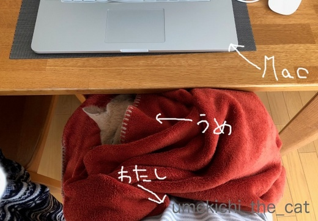
ちなみに今はこうなっています。
キーボード打ち難いわぁ・・・・・（むふっ♡）
 ↑ガブッと一押し↑
↑ガブッと一押し↑
「僕のワンダフルライフ」観てきました。※ちょっとネタバレありですよ※
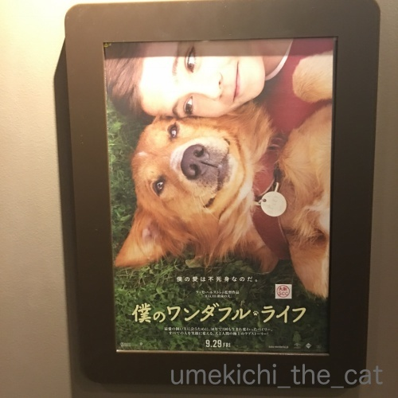
主人犬（公）のベイリーくんが転生を繰り返して忘れられない飼い主さんに会いに行く物語です。
運良くめぐり合い「僕生まれ変わって会いにきたよ！」と伝えようと
いろいろシグナルを送るのですが・・・
わー！思い出しただけでも泣けてきます。
決してお涙頂戴な映画ではありません。
私は上映時間の半分は泣いていましたが反応が過剰なだけで・・・(⌒_⌒;
ラッセ・ハルストレム監督らしい優しくてあったかい映画です。
この監督の映画は「ギルバート・グレイプ」と「ガープの世界」が大好き。
もし梅吉が転生して私たちにシグナルを送ってくれるとしたら
白目とガブガブだよね！と家族間の話はまとまりましたwww
バッテリーの減りが異様に早くなり色んなアプリがすぐ落ちる。
動作もカクカクしてイラっとすることが多くなっていたのです。
買い換えろ！ってことだったのかなっ(๑˃̵ᴗ˂̵)و
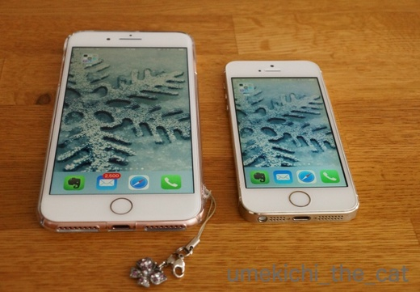
8と8Plusで迷いましたが画面が大きい8Plusにしましたよ。
（ホームボタンが無いXは操作に戸惑いそうなので見送りました。）
手が小さいのでPlusは手に余るかな、とも思ったのですが通常サイズでも
片手操作は出来ないので結局どちらでも一緒では・・・と (⌒_⌒;
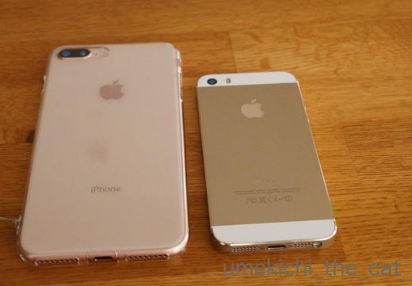
どちらもゴールドなんですがちょっと色合いが違います。
5sはシャンパンゴールド8Plusはピンクゴールドという感じ。
8Plusは透明のケースをしちゃっているので色合いがわかり難い（汗）
今回楽しみの一つが5sに比べるとカメラの性能が格段にアップしたこと。早速撮影してみます。
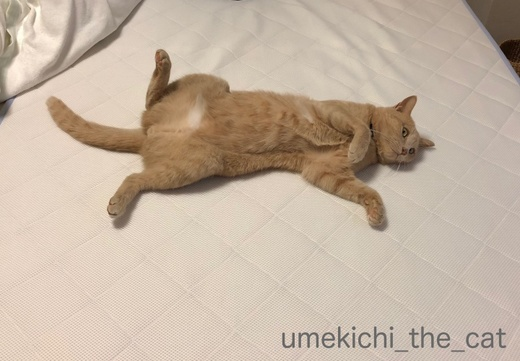
寝起きにびろ〜んと広げられちゃった梅吉さんがモデルです。
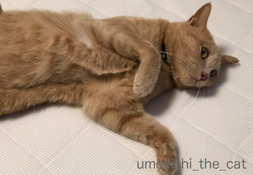
二倍ズームで寄ってみました＾＾
ズームボタンが出るのでバビッと寄れます。
ポートレートがきれいに撮れるモードもあります。
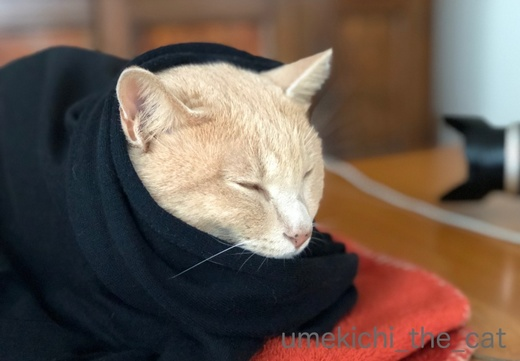
自然光モード。
スタジオ照明モード。
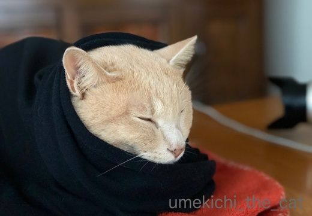
輪郭強調モード。
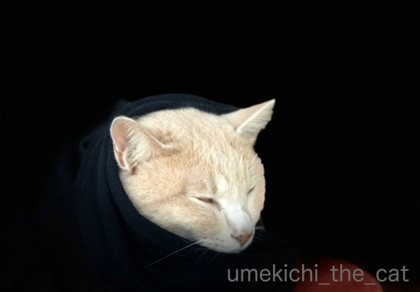
ステージ照明モード。
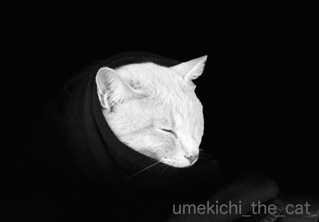
ステージ照明モード（モノクロ）。
ステージ照明以外の違いがいまひとつはっきりしないかな。
もう少し調整すると良いのかも。
ま、いろいろ遊べそうです！
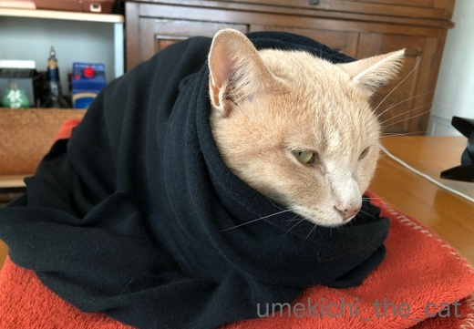
梅吉さんは私のカーディガンにくるまっていたのでした。
大阪は一気に寒くなったのですよー。
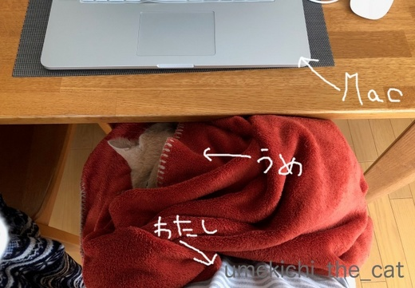
ちなみに今はこうなっています。
キーボード打ち難いわぁ・・・・・（むふっ♡）
「僕のワンダフルライフ」観てきました。※ちょっとネタバレありですよ※
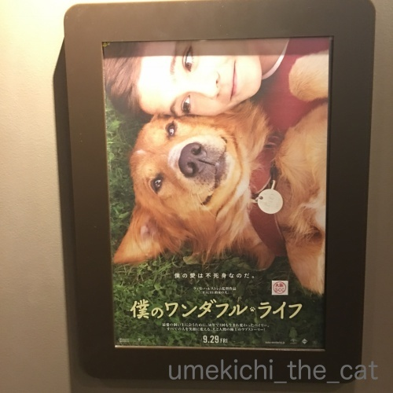
主人犬（公）のベイリーくんが転生を繰り返して忘れられない飼い主さんに会いに行く物語です。
運良くめぐり合い「僕生まれ変わって会いにきたよ！」と伝えようと
いろいろシグナルを送るのですが・・・
わー！思い出しただけでも泣けてきます。
決してお涙頂戴な映画ではありません。
私は上映時間の半分は泣いていましたが反応が過剰なだけで・・・(⌒_⌒;
ラッセ・ハルストレム監督らしい優しくてあったかい映画です。
この監督の映画は「ギルバート・グレイプ」と「ガープの世界」が大好き。
もし梅吉が転生して私たちにシグナルを送ってくれるとしたら
白目とガブガブだよね！と家族間の話はまとまりましたwww
2017-10-17 13:39
nice!(61)
コメント(27)

カフェオレ色の梅吉

梅吉 2023年8月10日 永眠


梅吉と出会った譲渡会

犬猫の理由なき殺処分ゼロ
妄想広告
UMEKICHI 光

爆発的に早い！
時々攻撃的！
Thanks to Mr.Boss365
爆発的に早い！
時々攻撃的！
Thanks to Mr.Boss365

今のスマホはどんどん進化してますよね♪
写真もコンデジよりも機能が良いものも！
っていまだにガラケーですが(;^_^A
寒くなるとお膝の上の率が高くなりそうですね♪
by きぃ (2017-10-17 14:16)
きぃさん＞スマホのカメラといえども
全然使いこなせていないような気がしています^^;
もっと頻繁に使うと良いのかもしれませんが
家ではほとんどデジイチだし・・・
かといってデジイチが得意なわけでもないし。
ま、写ってればいいや！との結論です(*>艸<)
by ちぃ (2017-10-17 14:56)
8良いですね～兄たんたち欲しがってます。色々楽しめそうですね
by みぃにゃん (2017-10-17 15:03)
みぃにゃんさん＞デフォルトの面白そうなアプリも色々付いてます。
若者なら使いこなすんだろうなー。
私はとりあえず「へー」と思ってそのままになりそう・・・^^;
by ちぃ (2017-10-17 15:16)
モードの違いが判読できるまでなんども見返しました。なるほどなるほど。梅吉さんが柔らかく見える自然光が好きです。
スマホに変えた方が便利なんでしょうけど、以前変えたら2ヶ月で調子悪くなった上に、指が乾燥してると反応が鈍いと言われたトラウマで、ガラケーに戻しました。昼間は猫がなめちゃうのでハンドクリームをつけたくないんです。
by zombiekong (2017-10-17 15:53)
８のカメラ機能良いですねぇ(^O^)
場合によってはデジイチよりもスマホの方が
綺麗に撮れたりしますもんねぇ^^;
くっ、膝の上に梅吉さん写真は絶対に自慢ですね(T_T)
生まれ代わってのシグナル、私にはシグナルそのものを送ってくれないだろうなぁ(/_;)
￬
私が脱いだ部屋着、うちのにゃんずは砂かけしてたそうです(>_<)→かみさん目撃談
by ニッキー (2017-10-17 16:31)
8Plus いいなーいいなー^^
わたしは、7Plus なのですが 8plus のカメラ機能惹かれます〜
いろんなモードがあって楽しそう！
僕のワンダフルライフ。映画館では絶対ムリ(><
わたしは号泣すると思う！
そっか、ギルバート・グレイプの監督さんなのですね。
by リュカ (2017-10-17 19:41)
僕はiPhone6だったのを８Plusにしました！
画面が大きくて見やすいです(^^)
by ma2ma2 (2017-10-17 20:31)
zombiekongさん＞私もなんども見直しちゃいました^^;
輪郭強調・・・？そう言われればそんな気が、みたいなw
ちゃんと使いこなせる人が撮ると各モードの良さが際立つんだと思います。
乾燥しているとタッチパネルの反応が鈍いんですね。
私は銀行のATMのタッチパネルが反応しなくなる事が・・・
体の末端の冷える冬に多いので生体として認識されいないようです (⌒_⌒;
ニッキーさん＞カメラアプリが起動さえしていれば瞬発力もスマホですよね。
デジイチは肝心なところでフォーカスを迷ったりして
決定的瞬間を逃す事がよくあります^^;
ニッキーさんの部屋着に砂かけを・・・(*>艸<)
梅吉は時々食べ終わった後の自分の食器に砂かけ動作をします。
大事なものを隠そうとする時にも砂かけをするんですよ！たぶん・・・・・
リュカさん＞カメラ機能まだ良くわからないので
ちゃんとチュートリアルを見て勉強しようと思っています。
せっかくの機能勿体無いもの！
一つ残念だったのが8は防水じゃないの。耐水ですって^^;
微妙にトーンダウン。お風呂で使おうと思ってたのになー。
僕のワンダフルライフ、所々で嗚咽を堪えました^^;
上映会場で一番泣いていた自信あり！
ビデオ配信になったらもう一度家で見て号泣するんだーwww
by ちぃ (2017-10-17 20:41)
スマホのカメラ、すごいところまで行っちゃってるんですね！
我が家のXperiaたちはイマイチだな～・・・(-_-メ)
僕のワンダフルライフ、僕生まれ変わって会いにきたよ！というだけでもう泣きそう。周りの迷惑にならないようＤＶＤが出たら家でこっそり観ることにします。
ちぃさんのカーディガンに梅吉さん、いいな～いいな～。
ウチのは相方のジーンズが一番お気に入りです(^▽^;)
by ゆきち (2017-10-17 20:43)
ma2ma2さん＞画面の大きさが全然違いますよね。
同じ画像でも違うのを見ているような感覚に陥ります・・・
ゆきちさん＞スマホのカメラ、
私の場合は使われない機能の方が多そうです・・・^^;
画質がさらに良くなったのはうれしい限りです。
PCに落として大きな画面で見ても荒さを感じなくなりました！
映画は嗚咽を堪えながら観ていました。
家で誰の目を気にする事なくご覧になるのでしたら
バスタオルを傍らにご用意してくださいね(^_－)☆
by ちぃ (2017-10-17 20:52)
ああ、私も買い替えたい現在iphone5c。家族のグループラインに私が撮ったナノときなこの写真をアップすると「画像が悪い！」と苦情が来ます(-"-)旦那も子供たちも7です。でも不具合でないとなんかもったいなくてねぇ～(*^。^*)
by palpal (2017-10-17 21:06)
iPhone8 Plusご購入おめでとうございます！
私はiPhone7ですが、老眼が進むにつれてピンチアウト動作が多くなり、画面の大きいほうがいいなあと思います。^^;
やっぱりカメラの試し撮りは愛猫さんですよね♪
「僕生まれ変わって会いにきたよ！」って書かれてあるだけで
もうすでに、、、→→ (T_T)
by yes_hama (2017-10-17 21:23)
梅しゃんのお色も、極上のシャンパンゴールドって感じ♪
まだまだ栓は抜きたくないねー！
by Ginger (2017-10-17 21:26)
iPhoneカッコイイし、カメラ機能が優れているんですね。
パソコンもMacだし、ちぃさんクールで素敵だな～＾＾
私はきっと使いこなせないので、エクスペリア使っています。
梅吉さんのお腹に、顔をうずめたいです( ´艸｀)
by マーヤ (2017-10-18 00:25)
えっ！この体勢でPC操作するのは普通でしょ！
今も子猫さんが膝に乗ってますよ＾＾
私はいまだにガラケーですが
スマホを買わなければならなくなった時には
老眼に優しい機種にしようと決めてます（爆）
by ぽちの輔 (2017-10-18 06:57)
新しいスマホ、良いですね!
自分はXperiaなのですが、周りはほとんどはiPhoneです。
次はやっぱりiPhoneかな・・・。
梅吉さんも綺麗に撮れてますね(^o^)
by kou (2017-10-18 07:53)
梅吉さんのきれいな毛並みがきれいに写ってますね！
新しくなると、機能がアップするのですね～＾＾
お気に入りのひざ掛けにくるまって、お膝の上～
正しいひざ掛けの使い方？＾m＾
by sana (2017-10-18 18:25)
梅吉くん、包まってシ・ア・ワ・セですね(#^.^#)
関東も寒いのだけど、大阪の寒さが伝わってきました～。
この映画は観たいと思っていたのだけど、泣かないで見る自信がないよ・・・。
うるうるならいいけど嗚咽しちゃいそうです＞＜
by emi (2017-10-18 19:06)
ぐっすり寝て、体調戻りました。
ありがとうございました。
私はいまだにガラケーです(^-^;
by riverwalk (2017-10-18 19:43)
マックにアイホンでリンゴ屋さんができそうよ(うらやますぃー
by BillK-ko (2017-10-18 20:29)
あらまぁ最新♡（*´∀｀*）
Plusはでかいですよね。つるっと手を滑らさないよう気をつけてくださいね。
わたしも、Xは問題外です。ってまだ6sですが・・・
（6sが遥か遠い機種のよう・・・）
梅吉くん、なにかのCM男子のようですよ・・・。
映画のわんこさんポスター、なんていい表情なのでしょう。
（それと見出しだけで涙が出てくる・・・笑）
「ギルバート・グレイプ」！わたしも一番好きな映画です！
by Ja-Kou66 (2017-10-18 23:53)
私は6plus。Xに一瞬ぐぐっとなりましたが(^^;アホみたいに高いので見送り。
まずはダンベル並みに重いiPadの買い換えが先です。
5sは下取りなしですか？
私にはこの映画は無理です(><)
若かりし頃、愛と青春の旅立ちを見て号泣、立ち上がれなくなって映画館の人に運ばれたのを思い出しました(-_-;
by も〜 (2017-10-18 23:54)
私が使っているのは、iPhone6ですが、
いろいろなところでヘタリが見られてきています。
なかでも、液晶の様子がおかしい点が、致命的かも。
ぼちぼち買い替えかな。
新しいカメラは、いろいろ楽しめそうでうね。
ま、きっと私だったら使いこなせないでしょうが。
撮影実験は、被写体がヨイ事もあって、素晴らしい出来かと・・・。
by うめむす (2017-10-19 01:31)
palpalさん＞スマホ、結構高い買い物だしねー。
私も我慢していたのですがバッテリーの減りが激しくて決断しました。
バッテリーのみの交換は？というのはナシでお願いします(^_－)☆
5c、カラーバージョンはこれ以降出ていないから結構レア機種かもよ！！
yes_hamaさん＞画面が大きくて目に優しいです(*>艸<)
一度大きくしたら通常サイズには戻せない予感・・・
appleがこのサイズを作り続けてくれることを祈ります。
もしなくなっちゃったらiPadminiのスマホ使い？
通話はFaceTimeのみ・・・緊急時には公衆電話とか(⌒_⌒;
Gingerさん＞当たり年のヴィンテージものですよ〜＾＾
あと30年はそのままで(^_－)☆
マーヤさん＞昔はwindows PCだったのですが
Macユーザのおっとが快適に使っているのを見てMacにしました。
デジイチやプリンターなどのデバイスと互換性のトラブルがなくて
とっても快適です！
一昔前はMacじゃひらけないページもあったのですが今は皆無だし＾＾
私もあんまり機能は使いこなせていないデス^^;
でも自分のしたいことは出来てるのでOK!!
お腹に顔を埋めたら・・・抱え込みのガブケリの洗礼ですよ〜(*>艸<)
ぽちの輔さん＞子猫さんがお膝を温めてくださるのですね＾＾
我が家はお風呂、湯たんぽ、布団乾燥機、おっとと
ライバルがたくさんいるので中々このスタイルにはなれません(-_-メ)
スマホは改めて比較してみるとよくあんなちっさい画面を見つめてたな・・・と。
Plusはくっきりはっきりよく見えるーーww
kouさん＞初スマホからiPhoneだったのでAndroid系は操作方法が
よくわからなくって・・・^^;
格安スマホでAndroidも考えたのですが操作に慣れるまで面倒だし
SIMフリーのiPhoneを買って、とも思ったのですが
結局普通に機種変しちゃいましたww
sanaさん＞新機種が出るたびにカメラの性能はアップしていますよねー。
他の機能が出尽くした感があるので
アピールできるのはそこしかないんじゃ・・・という感じも^^;
ひざ掛けごと梅吉、ひざ掛けが使えないなら梅吉を使えば良いじゃない？
とどこかの王妃様みたいな・・・(*>艸<)
emiさん＞寒そうにしていると手近なもので包んであげたくなる
過保護な飼い主です^^;風邪引かれても困るしーw
映画はどうぞご自宅で♪
私ももう一度家で見て今度は思いっきりしゃくりあげるんだー！
見終わったら梅吉を思いっきり「ぎゅーーーーーーっ」てする予定です＾＾
riverwalkさん＞眠って体調回復、よかったです＾＾
あ、ガラケーユーザーでしたか。
道案内、乗り換え案内等、私はスマホがなければお出かけできない
スマホ頼にりっぱなしの人になってしまいました・・・^^;
BillK-koさん＞私がりんごを扱ったら白雪姫に毒リンゴを私
イヂワル魔法使いみたいになりそうなんですけどー！！(*>艸<)
Ja-Kou66さん＞落としそうです！保証をつけてないので落としちゃいかん、と
常に緊張してスマホを持っているためかなんか手と肩が凝る・・・
そして意外に重いのが盲点でした^^;でも耐えるーー！
「ギルバート・グレイプ」好き、わー！一緒で嬉しいです。
大ブレイクする前のジョニーやレオ、
今はお見かけしなくなったジュリエット・ルイス
主役級三人に演技も瑞々しくて優しくて・・・
現在のお三方が全く違った立場にいるのも考え深いです。。
も〜さん＞5s、下取りに出すのですが
家電量販店で機種変したのでその場で端末の回収はありませんでした。
キャリアショップに持ち込むか契約携帯会社へ専用封筒で郵送
というシステムになっていましたよ。
設定やアプリがちゃんと復元されているか確認するのに
古い端末が手元にあって役立ちましたー。
映画、ハッピーエンドでもダメなのですね^^;
もしもご自宅でご覧になるならいつでもベッドに行ける準備をして
ご覧になるのがいいかもしれませんね！
その際はハンカチではなくバスタオルをご用意くださいませ(｀_´)ゞ
うめむすさん＞液晶に不具合があるととっても見にくいかも！
状態がひどくなると下取りにも影響しそうなので
早めに機種変した方が良いかも、ですね＾＾
カメラ機能、おっとを撮影することはほとんどないし
ましてや自撮りなど皆無。
梅吉がキレイに移せるコツを掴めたらOKです。
でも、どう撮ってもカワイイんだな・・・・(〃ω〃)
by ちぃ (2017-10-19 14:24)
機種変おめでとさんです。
メールのバッジ数が気になります＾＾
どうゆう写真でも梅吉さんは可愛いっすねー！
てか、最後は軽く自慢だよね（負けないもん）
by じゅらまろ (2017-10-19 16:21)
じゅらまろさん＞メールのバッジ数よく気がつきましたね！
メールアカウントの設定し直したらサーバーにあった古いメールが全部きて
エライことになってます・・・^^;
このところ続く自慢合戦、いつまで私のネタが続くかしらw
by ちぃ (2017-10-19 17:56)